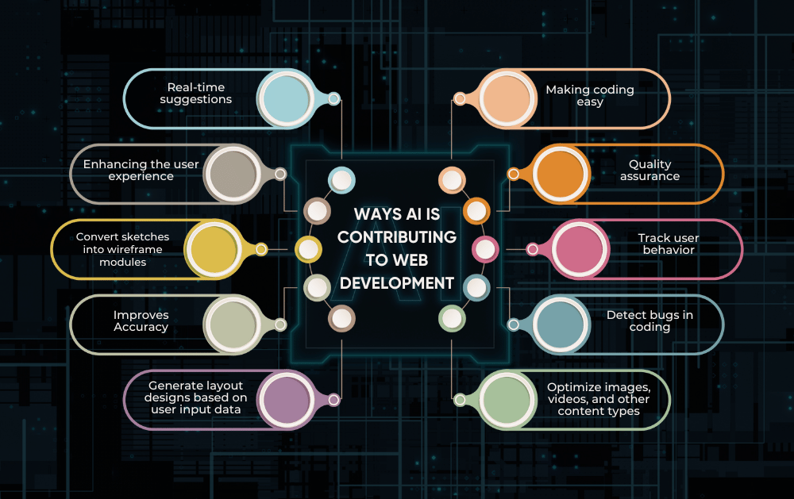
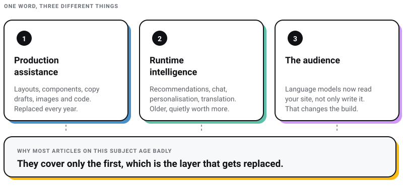
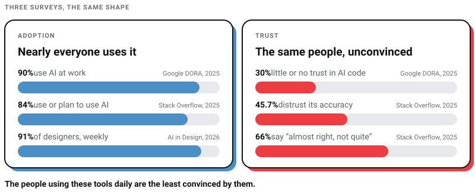
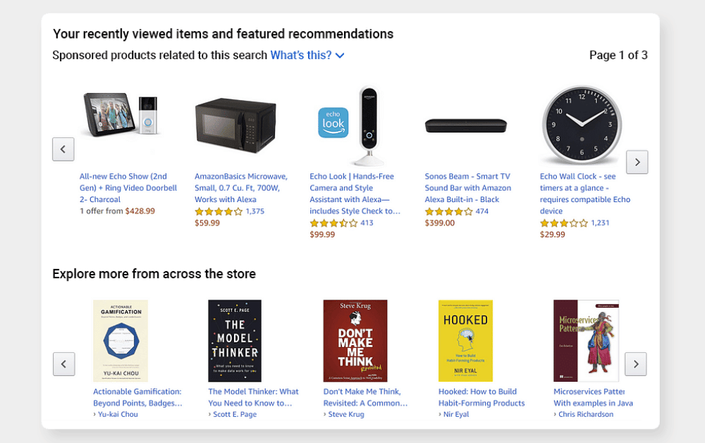
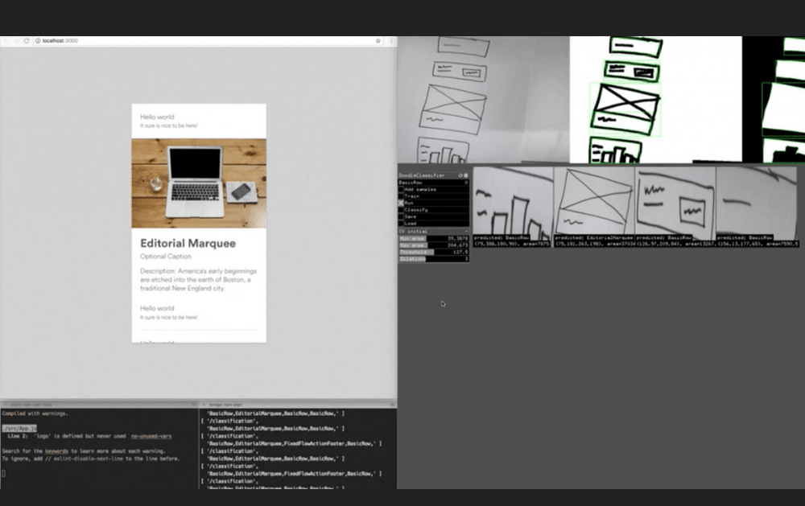
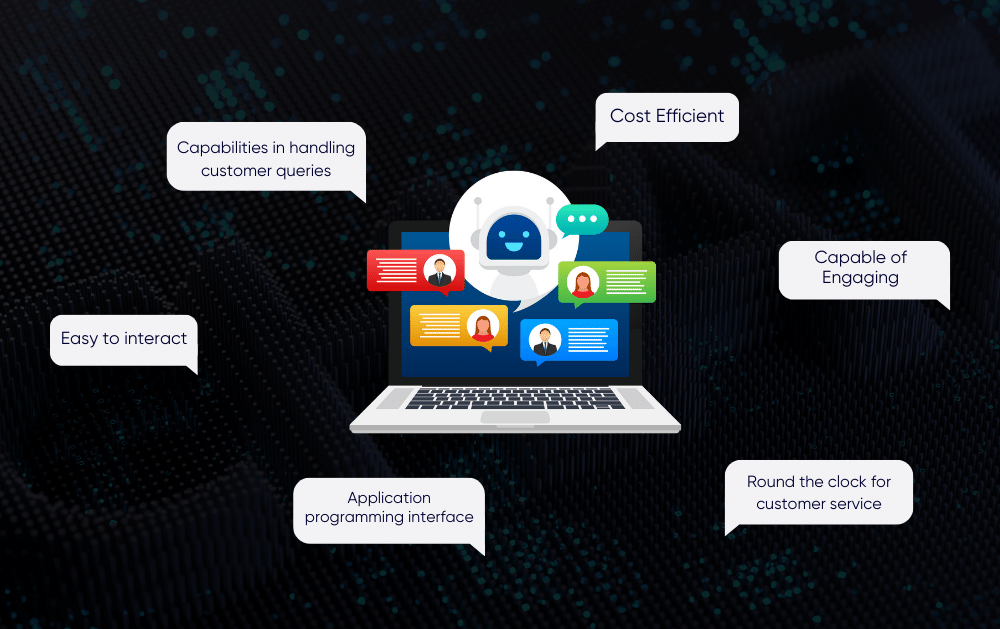
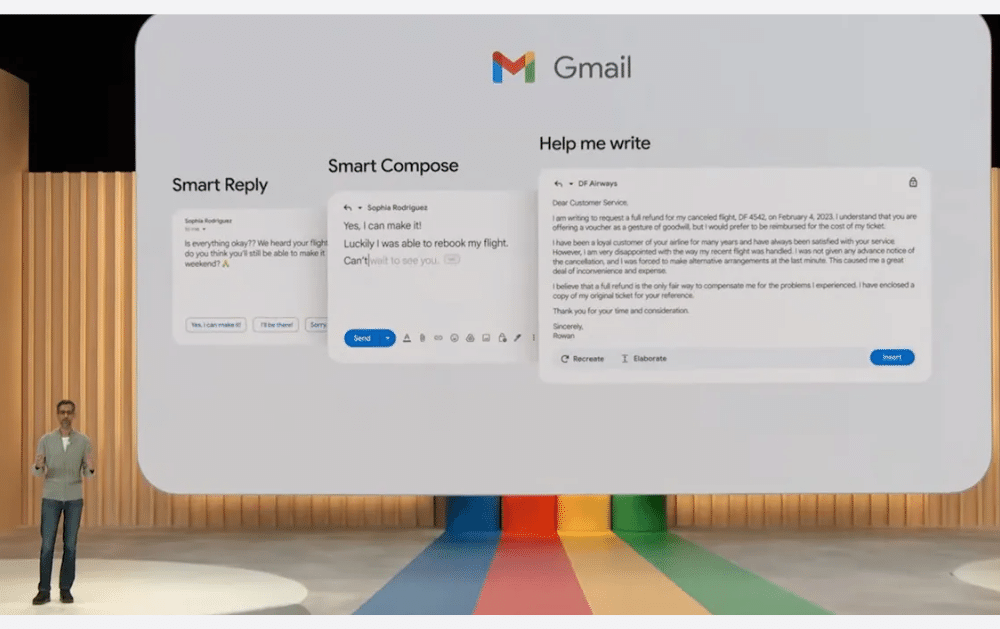
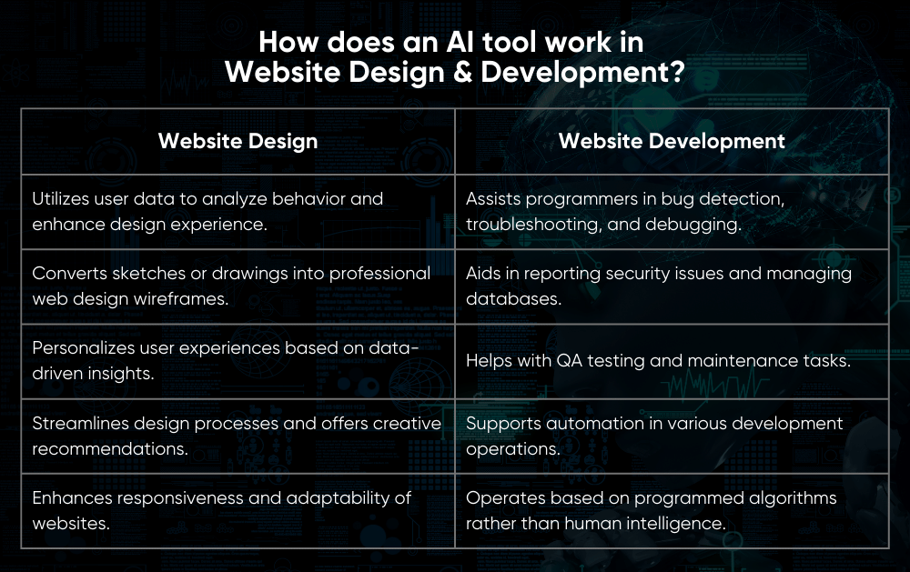
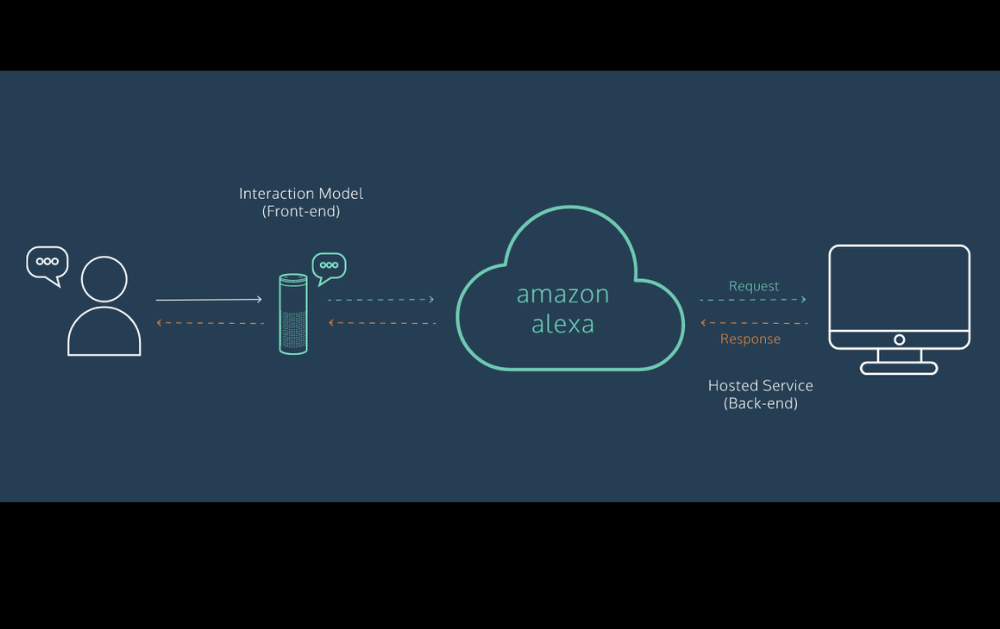

WEB DEVELOPMENT
WEB DEVELOPMENT
AI Website Builders vs Custom Development: Where the Shiny Tools Actually Break
AI website builders are fast, but are they right for your business? Discover where they excel, where they fail, and when custom development is the…

Adobe XD is in maintenance mode. Editor X cannot be used to start a new site. Debuild does not resolve in DNS. Every one of those was, recently, a tool somebody was told to learn.
That churn is the actual story of AI in web design, and almost nobody writes it down. The tool list goes stale far faster than the argument underneath it.
I run Pixel Street, a design and branding studio in Salt Lake, Kolkata. We build for brands like Coca-Cola, ITC and Marico, and we use AI in every workflow we have, from design to code to content. So this is not a designer sulking about robots. It is a practitioner telling you which layer is worth building a business on and which layer you should expect to replace.
AI has genuinely compressed production work in web design. It has not touched the part clients actually pay for. The measured evidence is messier than any vendor page will tell you: in a randomised controlled trial published by METR in July 2025, experienced developers allowed to use AI took 19% longer to finish real tasks, while estimating afterwards that AI had made them 20% faster. Google’s 2025 DORA report, built on responses from nearly 5,000 technology professionals, found 90% AI adoption sitting next to 30% who report little or no trust in the code AI writes. Use the tools. Verify everything they hand you. Keep the judgement in human hands. The tool names below will change again within a year. The five questions before the pixels will not.

Strip the marketing away and AI shows up in web design in three distinct places, which the industry insists on blending into one word.
The first is production assistance: generating layouts, components, copy drafts, images and code. This is where the visible progress has been, and where the tools are now genuinely good.
The second is runtime intelligence shipped inside the website itself: recommendation engines, chat assistants, personalised content, translation, accessibility adjustments. This is older than the current hype cycle and quietly more valuable.
The third is the audience. Language models are now readers of your website, not just writers of it, which changes how a site needs to be built. I have written about that separately in the guide to AI search optimisation.
Most articles about AI in web design are really about the first category only. That is why they age badly. Production tools are exactly the layer that gets replaced every twelve months.

Every one of these is still repeated as current somewhere. Checked on 30 July 2026.
debuild.app no longer resolves in DNS, and firedrop.ai now redirects to a domain-for-sale listing on Atom.com.Four of those six are dead or absorbed products. That is a mortality rate worth internalising before you build a studio process, or a client’s revenue channel, on top of any single AI tool.
The market-size projections and chatbot forecasts attached to this subject deserve the same scepticism. I have tried to trace the ones in general circulation and every trail led back to blog posts citing blog posts. A number that sounds right is worse than no number, because it borrows credibility it never earned.
Generative AI produces new artefacts rather than only classifying existing ones. Given a prompt it returns text, images, layouts or code that follow the statistical patterns in its training data. For web design that means it is very strong at anything with a large body of prior examples, and weak at anything that has to be genuinely unlike what came before.
That single sentence explains most of what follows. A hero section, a pricing table, a contact form, a Tailwind config: thousands of examples exist, so the output is fast and competent. A brand position that no competitor in your category can copy: no examples exist, because if they did it would not be a position. The model has nothing to average.
Almost everything written on this subject cites a prediction rather than a measurement. Here are the measurements, and they are messier than the forecasts.
METR ran a randomised controlled trial with 16 experienced open-source developers across 246 real tasks in repositories they already knew well, using the AI tooling available between February and June 2025, mostly Cursor Pro with Claude 3.5 and 3.7 Sonnet. Tasks were randomly assigned to allow or forbid AI. Published on 10 July 2025, the result was that the AI-allowed tasks took 19% longer. The same developers had expected a 24% speedup, and afterwards still believed they had gained 20%.
METR is careful about what this does and does not show. It is 16 developers on mature codebases they know intimately, not proof that AI slows down most engineers, and METR has since revised its experiment design. But the gap between measured and felt productivity is the part every studio owner should sit with. Speed you can feel is not the same thing as speed you can bill.
Three surveys published since late 2025 point the same way, and each publishes its methodology, which is why I am willing to cite them.
Read together: adoption is settled, the tool count is exploding, and the people using these tools daily are the least convinced by them. That is not a contradiction. That is what competence with a new instrument looks like.

Artificial Design Intelligence, meaning software that generates a whole website from a description of a business, was the category everyone was excited about. A decade in, the honest verdict is that the good version of it won and the branded version of it died.
The startups that carried the ADI banner are gone. What replaced them are the platform incumbents and the code-first tools. Wix launched Wix Harmony on 21 January 2026, pairing natural-language site generation through an agent called Aria with conventional drag-and-drop editing on its own hosting. Prompt-to-app tools like Lovable, Bolt, v0 and Replit occupy the developer end. That is ADI, delivered. It just belongs to companies large enough to survive their own roadmap.
That leaves a studio roughly where I argued in AI website builders versus custom development. These tools are excellent for prototypes, validation and simple presence sites, and they break on brand distinctiveness, machine readability, ownership and cost at scale. We still rebuild AI-generated websites for clients almost every month. Both facts are true at once.
The genuinely durable uses of AI in design work are unglamorous, and they all compress the distance between a question and an answer:
Notice what is missing: deciding what to build. AI shortens the loop. It does not choose the direction.

Amazon’s product recommendations remain the clearest example of runtime intelligence doing real commercial work. The model is not designing the page. It is deciding what goes in a slot a designer defined.
On the interface side, the useful applications are narrower than the category lists suggest. These are the ones I would actually specify on a build:

Source: thenextweb.com
Airbnb’s sketch-to-code experiment, led by design technologist Benjamin Wilkins and covered on 25 October 2017, converted hand-drawn wireframes into working components. Two details matter more than the demo. It only worked because Airbnb already had a rigorously documented design system for the model to map onto, and Wilkins’ stated goal was that “the time required to test an idea should be zero.” The lesson was never that AI writes your interface. It was that a disciplined design system is what makes automation possible at all. Studios that skipped the system got nothing from the tools.
Chatbots on websites went from irritating to useful somewhere around the point that language models replaced decision trees. I will defend them now, with one condition attached.

A well-scoped assistant answers routine questions at 2am, captures intent from visitors who would never fill in a form, and hands the interesting conversations to a human with context attached. The condition is scope. An assistant grounded in your own documentation, pricing and policies is an asset. An assistant improvising about your refund terms is a liability with a chat bubble. The same “almost right, but not quite” failure that frustrates 66% of developers in the Stack Overflow data is far more expensive when it is talking to your customer instead of your code editor.
Recommendation systems are the oldest commercially proven AI on the web, and they are still where the returns are clearest.
A specific percentage of Netflix viewing is attributed to recommendations in almost every article on this subject. I will not repeat it, because every trail I followed led to an executive quote recycled through a decade of blog posts rather than to a published methodology. The point stands without a borrowed number: Netflix organises its entire interface around ranked, personalised rows, because catalogue browsing does not scale past a few dozen titles.
For a normal business website the honest version is smaller and cheaper. Related products, recently viewed, content that changes for a returning visitor, internal search that understands intent. You do not need Netflix’s infrastructure to get most of the value.
This is the least discussed application of AI in web design, and I think it is one of the most useful.
An AI tool is a fast, tireless, slightly overconfident reviewer. Pointed at an existing site it will find broken heading hierarchies, missing alt text, thin pages, contradictory copy, orphaned URLs and forms that ask for information nobody needs. It produces that in minutes, where an audit used to take a day.
What it will not do is tell you which of the forty findings matters. That ranking is the entire skill. A studio that hands a client the raw AI audit has outsourced its judgement and called it a deliverable.

Source: cnet.com
Gmail’s suggested replies are the pattern in miniature. The model proposes, the human picks, and the interface is designed so that picking is faster than typing. That is a good specification for almost every AI feature on a website: make the suggestion cheap to accept and cheap to reject.

I have organised this by category rather than by product feature, because categories survive and product names do not. If you want a deeper walkthrough of the visual-design side specifically, I keep a separate list of AI design tools for graphic designers.
Still the centre of gravity, and it moved decisively toward code and motion at Config on 24 June 2026: code layers that turn design layers into interactive code with GitHub sync, a timeline-based Figma Motion that exports to CSS, JSON and React, AI-generated shader fills, generative plugins you describe rather than build, and an agent with connectors to Notion, Slack and GitHub. The direction is clear enough. The canvas and the codebase are converging, and the handoff document is the thing being automated away.
The 2026 survey data has 76% of designers using AI coding tools, which was a rounding error two years ago. Claude Code, OpenAI Codex, Cursor and GitHub Copilot occupy this space. They are the highest-leverage AI tools in a studio, and the ones that most reward existing skill. The METR result is the warning label: on a codebase you know deeply, an agent can cost you time while feeling like it saves it. Measure, do not vibe.
Lovable, Bolt, v0, Replit and Wix Harmony generate running applications from a description. 85% of designers in the 2026 report have used a tool in this class. Use them for prototypes, internal tools, and validating an idea before anyone commits budget. Read the export terms before you use one for a client’s primary asset, because leaving several of these platforms is a rewrite rather than a migration.
Adobe’s creative generative AI now sits under Firefly rather than the Sensei branding it carried for years, with an agent-driven assistant that orchestrates multi-step work across Creative Cloud. Two rules I hold to. Generated imagery gets used for exploration and mood far more often than for final client-facing assets, and generated copy always gets rewritten by the person who understands the client, because the model writes the average of everything ever said about your category.
Two demos convinced a lot of people in 2020 that GPT-3 was about to reorganise the profession. Sharif Shameem’s Debuild built React apps from English instructions. Jordan Singer’s Figma plugin “Designer” generated interface components from a sentence. Both were astonishing. Neither exists as a product today. The capability did not vanish, though. It got absorbed into the platforms, which is the same pattern as ADI. Demos become features of somebody bigger, or they become nothing.
One framing from that era holds up. Designing a website means solving for content, visual design and code. AI has compressed the third almost completely, is compressing the first, and has barely touched the second in any way that produces distinctive work. So the skill that appreciates in value is the one AI cannot average its way into: deciding what the thing should be. That was the argument in 2020 and it has held up better than any tool of that generation.
Four limits, as of mid-2026, and none of them is the one people expect:
Both of these were sold as imminent transformations of web design. Neither arrived in the form advertised, and what did arrive is more useful to know about than the forecast was.

Source: hackernoon.com
Speech recognition got dramatically better. Voice-controlled websites did not become a mainstream design pattern. Where conversational input did win is text: natural-language search and chat assistants inside otherwise conventional interfaces. Voice remains genuinely important for accessibility, and for that reason alone it belongs in a build specification. Treat it as an input method, not a redesign.
This diagram came from Editor X, the platform Wix folded into Wix Studio in January 2025. The reference dying is its own small comment on the forecast.
Browser-based AR found one durable home: letting someone see a product in context before buying it. Virtual try-on for cosmetics, eyewear and furniture is real commerce, not a demo. General-purpose VR websites did not arrive. If a client asks about AR, my question is whether the product has a fit-or-placement problem worth solving. If it does, it can be excellent. If it does not, it is an expensive novelty.
It has already replaced a large share of web design production. It has not replaced design decisions. The 2026 survey data shows designers adding tools rather than disappearing: an average toolstack of seven, up from three in a year. If your only offer was pushing pixels and writing boilerplate, that offer is in trouble. If your offer was working out what a business should say and to whom, AI made you faster at it.
The generation is not the problem. The output is. Google’s own generative-AI optimisation guidance is unusually blunt: content people find “unique, compelling, and useful” will influence your presence in AI search “more than any of the other suggestions,” you do not need to chop pages into fragments, and you do not need to write in a special style for machines. Optimising for generative AI, in Google’s words, is still SEO. Generic AI output fails on exactly the axis that matters most. Some builders also ship JavaScript-heavy pages that crawlers read poorly, which is a separate and quieter cost.
My own recommendation, not a benchmark: one coding agent, one design canvas, and one general model, then stop. The 2026 survey average of seven tools per designer describes early adopters accumulating subscriptions, not an optimal setup. Spend the saved money on research and writing, which is where the differentiation is. If you can only fund one line item, fund the coding agent.
No. Adobe put XD in maintenance mode, stopped selling it as a single app to new customers, and has stated it has no plans to invest further. Figma is where the industry went. If you are learning tools now, learn the canvas and learn a coding agent.
Shipping output they cannot evaluate. The Stack Overflow finding and the METR finding are the same finding wearing different clothes. AI produces plausible work quickly, and plausible work feels finished. The only defence is a reviewer with enough expertise to spot the gap, which means the discipline you need is old-fashioned: briefs, design systems, code review and someone accountable for the decision.
Use AI. We do, in every part of the web design process, and refusing it on principle would be self-harm dressed up as craft.
Then hold two things steady while the tools churn underneath you. Own your asset, because several of the products above no longer exist and their users had no exit. And keep the judgement, because the one thing a model trained on the entire web cannot generate is a position no one has taken yet.
Four years ago I made a cold call to ITC with a fancy deck and zero credibility. Today we design for them, and for Coca-Cola and Marico. No prompt produced that sentence. That is the part of this job that is still ours, and I expect to be writing the same thing when the next set of tool names goes stale.
If you want that argument applied to a specific decision rather than in the abstract, that is what we do at Pixel Street.
18 min read 23 cited sources Web Design
Author
Khurshid Alam is the founder of Pixel Street, an AI-native design & development studio. Design thinking on weekdays and spreadsheets on weekends.
He writes about growth, design, and AI, mostly because someone has to say the quiet parts out loud.
WEB DEVELOPMENT
AI website builders are fast, but are they right for your business? Discover where they excel, where they fail, and when custom development is the…
 Web Design
Web Design
A client asked me this on a call last month: “Khurshid, everyone just asks ChatGPT now. Do we even need a website anymore?” He runs a business doing…
 Branding
Branding
From small-time gigs to booming creative industries, web and graphic designers have taken centre stage. Whether you’re a rookie or a design virtuoso…
 Web Design
Web Design
Have you ever visited a website on your phone and found it hard to read or navigate? That’s what happens when a website isn’t designed to fit all…


{kind=link}